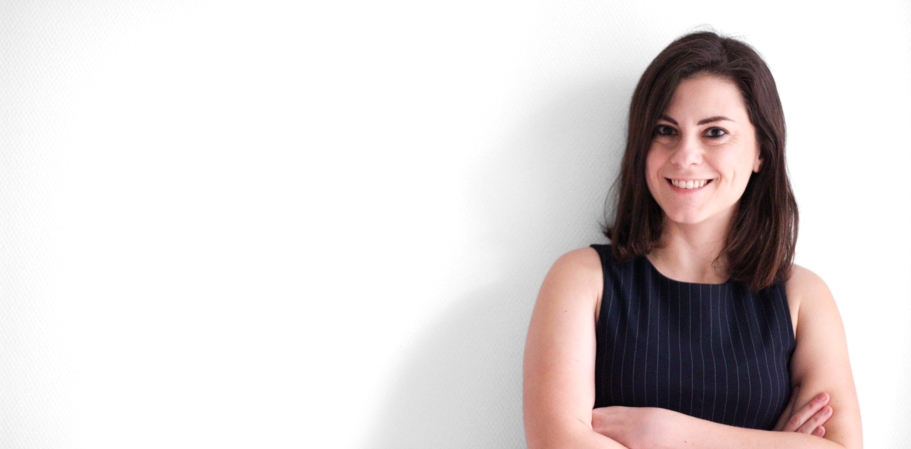

Honorable mention · CHI 2024
Is it just a score? Understanding Training Load Management Practices Beyond Sports Tracking
PDF ↗Human-centred experience design of personal health technologies — where physiology, psychology, and interaction design meet.

I investigate how interaction design can create socially and personally acceptable self-tracking technologies. Currently my focus is on data sensemaking in health management — exploring the role of design in tracking physical activity, exercise, sports, and injury rehabilitation.
My work integrates physiology, psychology, and interaction design to craft meaningful data interactions that promote physical activity and sports engagement.
Trust in AI-assisted health decision-making — presented at CHI 2025.
PDF ↗Board member of CHI Nederland, the ACM SIGCHI chapter for the Dutch HCI community.
Danique Hoftsee on body maps and women's embodied experiences.
PDF ↗Freehabilitation Project selected for Dutch Design Week Expo — Health and Wellbeing.
Paper ↗Tina Ekhtiar — Changing Health Goals with Personal Informatics.
PDF ↗Track coordinator of the Human-Technology Relations master's specialisation, Industrial Design Engineering, UT.
Is it just a score? Understanding Training Load Management Practices Beyond Sports Tracking
PDF ↗From Metrics to Experiences: Investigating How Sport Data Shapes Social Context, Self-Determination and Motivation
DOI ↗Goals for Goal Setting: A Scoping Review on Personal Informatics
PDF ↗Data Sensemaking in Self-Tracking: Towards a New Generation of Self-Tracking Tools
PDF ↗